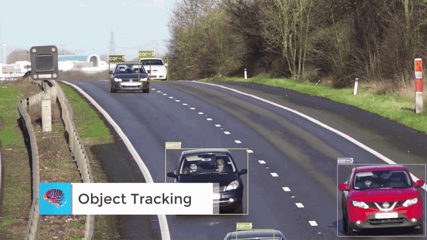
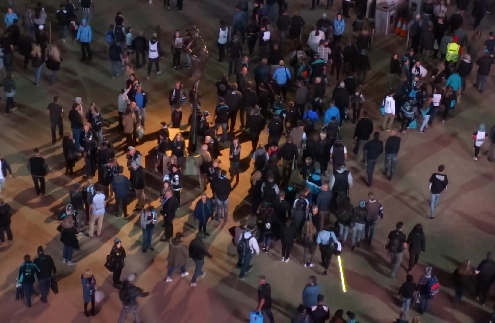
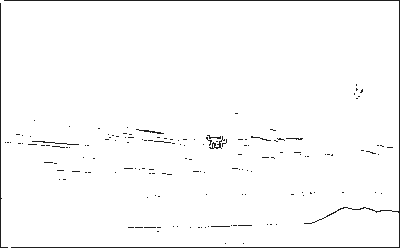
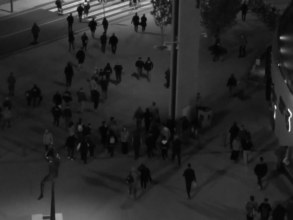

AC-MOT
Computer Engineering and Artificial Intelligence Department


Introduction and Motivation
What detection and tracking are, where they are used, what makes them hard, and how we measure them.
Object Detection: What It Gives Us

Multi-Object Tracking: Keep the Same ID
 Frame t
Frame tThe person beside the white car has ID 1.
 Frame t + k
Frame t + kThe same person now has ID 8 — an identity switch.
“What objects are here?”
“Which object is which, over time?”
Where Multi-Object Tracking Is Used

Traffic Public spacesPedestrian safety
Public spacesPedestrian safety Drone video
Drone videoCount cars and measure traffic flow.
Follow crowds in stations and malls.
Watch people near roads and crossings.
Our focus: drone video — tiny objects and a small onboard computer.
The Challenges of Real-Time Tracking
 Difficult frame
Difficult frameDense crowd, many hidden people, poor light. IDs are hard to keep.
Easy frameFew objects, large, well separated, good light.
TP, FP, FN and TN: The Four Outcomes
When we check a detector, every box and every real object ends in one of four results. Two are right, and two are mistakes.
| Result | Meaning in easy words |
|---|---|
| TP · true positive | a real object, and the detector found it ✓ |
| FP · false positive | a box, but nothing real is there — a false alarm ✗ |
| FN · false negative | a real object, but the detector missed it ✗ |
| TN · true negative | an empty area, correctly left empty ✓ |

FP: the box is in the wrong place (IoU 0.22)

FN: the bird is there, but it has no box
MOTA — Multiple Object Tracking Accuracy
MOTA says how accurate the tracking is overall. It starts from 100% and subtracts every mistake: missed objects, false boxes and ID switches. Higher is better.
all mistakes ÷ all real objects · FN = false negative (missed) · FP = false positive (false box) · IDS = identity switches · GT = ground truth (real objects)
Four people tracked with IDs 2, 3, 4 and 5.
4 real people (GT = 4). The tracker misses 1 (FN = 1), draws 1 false box (FP = 1) and swaps 1 ID (IDS = 1).
MOTA = 1 − (1 + 1 + 1) ÷ 4 = 0.25
Identity Switches (IDS)
An identity switch happens when the tracker gives the same object a new ID number. IDS counts how many times this happens. Lower is better — 0 is perfect.
Before occlusionBefore being hidden: ID 4.
After occlusionAfter: the same person is now ID 8 → one switch.
Related Work: Detectors and Trackers
What we learned from our IEEE ICMISI 2026 survey: detector and tracker families, benchmarks, datasets, and the speed-vs-accuracy trade-off that showed us the gap.
ByteTrack: The Baseline of This Work
| Step | What happens in every frame |
|---|---|
| 1 | The detector finds boxes and splits them into strong (high score) and weak (low score) |
| 2 | The tracker predicts where each known object has moved (Kalman filter) |
| 3 | First round: match the strong boxes to the known objects by overlap |
| 4 | Second round: give the weak boxes a chance to match the objects still left |
| 5 | Start a new ID for a strong box that matched nothing; delete objects not seen for too long |

Which Tracker Switches IDs the Least?
SORT, DeepSORT, ByteTrack or OC-SORT? Hint: the most accurate tracker on the last slide is not the winner. The answer is on the next slide.
Benchmark Datasets
| Dataset | Size | Camera | Why it matters here |
|---|---|---|---|
| COCO (2014) | 330K images, 80 classes | ground photos | the standard for scoring detectors (mAP) |
| MOT17 / MOT20 | 14 and 8 videos | street CCTV | the standard pedestrian tracking benchmark |
| KITTI (2012) | 15K stereo pairs | car roof | driving, with LiDAR and GPS |
| VisDrone2019 | 288 videos, 262K frames | drone, 5–120 m high | very small objects, heavy occlusion |
| UAVDT NEW | drone video | drone | our zero-tuning generalization test |



The Problem: Not Every Frame Is Equally Hard
Aerial scenes keep changing, but a normal tracking pipeline uses one fixed detector configuration for every frame.
Aerial Scenes Are Not Equally Difficult
In the same drone video some frames are easy and some are hard — yet a normal tracking-by-detection pipeline uses one fixed detector configuration for all of them.
Easy frames
- sparse — few objects
- clear background
- well illuminated
- larger objects
Hard frames
- crowded
- tiny objects
- high edge complexity
- low light
- blurred
AC-MOT: An Adaptive Control Layer
Not a new detector and not a new tracker — a small control layer that reads scene difficulty and changes the detector’s settings.
Seeing Three Clues on Real Pictures


Calm sky: edge density 0.021

Busy parking lot: edge density 0.295
 Day
Daymean gray 110.6 → night flag 0

Nightmean gray 40.5 → night flag 1
 Sharp
SharpLaplacian variance 4,074 → blur flag 0
 Blurred
BlurredLaplacian variance 4 → blur flag 1
Confidence Threshold: The Main Detector Control
Row (a): the detector's own scores above each box — 0.9, 0.8, 0.4 and 0.1.
High threshold (e.g. 0.5)
Keeps only 0.9 and 0.8. Clean, but the weak real object (0.4) is lost.
Low threshold (e.g. 0.2)
Also keeps 0.4. The object is found, but more false boxes can enter.
Choosing the Test Domain: Drone Surveillance
From high up, a person is a blob about ten pixels wide.
The same kind of scene at night: contrast falls away.
Minutes later, an open road with large, easy objects.
The VisDrone2019-MOT Benchmark
| Resolution | 1920 × 1080 (Full HD) |
| Altitude | 5 to 120 m above the ground |
| Camera angle | straight down to tilted |
| Object size | 5 to 30 pixels wide — extremely small |
| Conditions | daylight, low light, motion blur |
| Tuning split NEW | validation · 7 sequences |
| Final test split NEW | test-dev · 17 sequences · 6,635 frames |
| Density | 32.4 objects per frame (215,014 filtered boxes) |
The Original Ablation Study
Which part of the first AC-MOT design improves which part of tracking? This study is separate from the final test-set comparison.

Optimizing AC-MOT With Validation Data
From hand-picked values to a validation-driven search: Optuna V1, the test-set comparison, the V2 trade-off and UAVDT.
Which Clue Did the Search Trust Most?
Crowd, tiny objects, edges, night or blur? Our hand-set guess gave crowd and tiny the most weight. Make a guess — the answer is coming.

Transfer to a Published Strong MOT Pipeline
A short, separate study after the original AC-MOT story: can the same control idea be added to a much heavier published tracker?